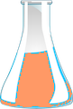
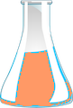

1. Familiarize with the spectrophotometer.
2. Turn on the instrument clicking on the power button and wait for 30 min for initialization of the instrument.
3. Prepare following two solutions: a) ~0.001 M of a potassium dichromate (K2Cr2O7) and b) ~5mg/L caffeine in distilled water. Here the solutions are shown on two volumetric flasks. One can select a solution for measurement by clicking on the desired solution from the drop-down menu.
4. Click on the beaker to take a clean, dry beaker.
5. Click on the volumetric flask to pour the solution into the clean, dry beaker.
6. Click on the micropipette to collect appropriate quantity of solution from the beaker. In real operation, one attaches an appropriate tip to the micropipette and sets the scale to the required volume on it prior to dipping it in the solution.
7. Take a cuvette by clicking on it.
8. Pour the solution from the micropipette into the cuvette by clicking on the cuvette. In actual measurements, the cuvette is filled up to about two-third of its volume.
9. Click on the spectrophotometer lid to open it.
10. Click on the cuvette to place it in the sample holder. One has to use water as the sample blank or reference in this measurement. Here a double beam spectrophotometer is shown. In this case, one can place the sample in the sample holder (often the front one) and the sample bank or reference in the reference holder (often the back one) simultaneously.
11. On the screen, enter the wavelength range of spectral scan.
For caffeine: Start: 590 nm End: 290 nm.
For K2Cr2O7: Start: 700 nm End: 325 nm. In real operation, the wavelength range of incident light for the sample is chosen and the wavelength scan is run via the accompanied computer software. One can run the scan in absorbance (A) or transmittance (%T) mode.
12. Click on the green ‘Start’ button on the measurement set-up screen to run the wavelength scan. Observe the wavelength scan. If the spectrophotometer is a single beam instrument, then first the sample blank or reference is taken in a cuvette and the wavelength scan is run followed by the sample. One has to subtract the reference data from the sample data for respective wavelengths.
13. Click on Close button when spectral scan is complete. In real operation, the scan data are stored in the computer. The instrument stores data and therefore asks for the Sample File name. One enters a file name to save the data.
14. Repeat the measurement for another sample.
15. Collect data by clicking on the Data tab.
16. Plot the absorbance (or transmittance) of the sample vs. wavelength for both the samples and if possible, overlay the spectra of the two samples.
17. Determine the wavelengths of maximum absorption for main peaks for both the samples


 
